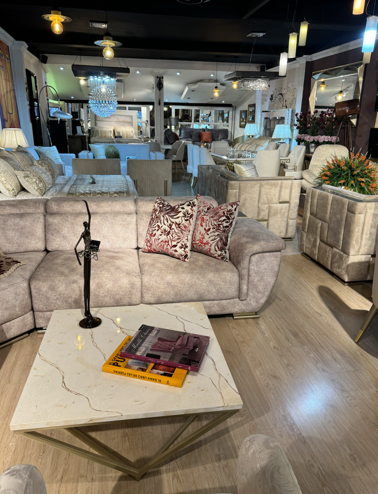
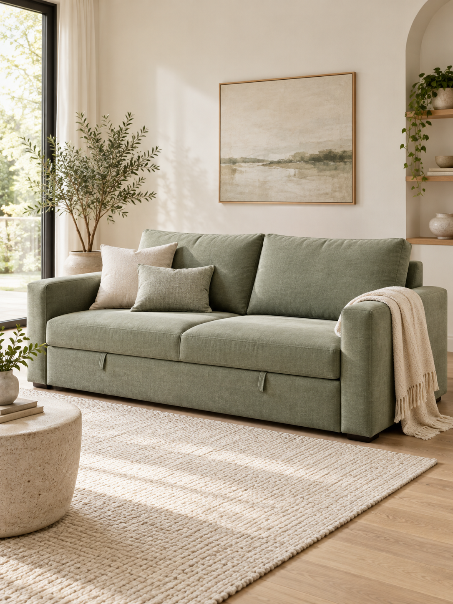

Brisa
Ligero y luminoso para espacios pequeños.
Precio por definir
LA CASA DEL SOFACAMA · BY MUEBLES SHALOM
Cuatro colecciones, una misma forma
de sentirte en casa.
01 / SOFACAMAS
Explora formas, tonos y nuevas maneras
de sentirte en casa.
Colección provisional · 15 modelos con 4 opciones de tela y color. Imágenes generadas para explorar el diseño de la tienda. Productos, medidas, precios y disponibilidad pendientes de confirmar.
Ligero y luminoso para espacios pequeños.
Precio por definir
Una silueta amplia en un tono natural.
Precio por definir
Textura y calidez para darle carácter a tu sala.
Precio por definir
Líneas sencillas con acentos de madera.
Precio por definir
Una propuesta en L para compartir y descansar.
Precio por definir
Azul profundo y curvas con personalidad.
Precio por definir
Volúmenes suaves en blanco hueso.
Precio por definir
Una propuesta cálida de inspiración urbana.
Precio por definir
Un formato sin brazos para aprovechar el espacio.
Precio por definir
Tonos suaves y una silueta generosa.
Precio por definir
Verde intenso con estructura de líneas rectas.
Precio por definir
Un toque de color para rincones acogedores.
Precio por definir
Una composición modular de aire contemporáneo.
Precio por definir
Un acento mostaza de inspiración retro.
Precio por definir
Una propuesta tipo diván para espacios versátiles.
Precio por definir
No encontramos ese modelo. Prueba otro nombre o selecciona “Ver todos”.
15 modelos
02 / SALAS
Composiciones para darle forma al lugar donde sucede la vida: desde líneas compactas hasta formatos modulares.
Colección provisional · Imágenes generadas y modelos de muestra. Precio, medidas, materiales y disponibilidad por confirmar.
Sala modular
Una composición modular de líneas amplias para imaginar una sala abierta y acogedora.
Sala de tres puestos
Una propuesta de tres puestos con una silueta definida y tonos fáciles de combinar.
Sala en L
Un formato en L con carácter, pensado como inspiración para compartir y descansar.
03 / SILLAS AUXILIARES
Sillas que suman un asiento, una textura y un acento de diseño a tu sala, estudio o rincón de lectura.
Colección provisional · Imágenes generadas y modelos de muestra. Precio, medidas, materiales y disponibilidad por confirmar.
Poltrona curva
Formas redondeadas y una textura suave para un rincón de lectura de inspiración serena.
Silla de madera y tapizado
Una estructura de madera a la vista que aporta calidez y ligereza visual.
Silla de acento
Un acento de color con curvas envolventes para darle protagonismo a un rincón.
04 / CAMAS
Propuestas de camas y cabeceros para construir una habitación con equilibrio, textura y personalidad.
Colección provisional · Imágenes generadas y modelos de muestra. Precio, medidas, materiales y disponibilidad por confirmar.
Cama tapizada
Una cama tapizada de líneas suaves y cabecero amplio para una habitación de tonos naturales.
Cama de madera
Una propuesta de madera con proporciones sencillas para un dormitorio cálido y luminoso.
Cama con cabecero
Un cabecero de presencia definida que crea un punto de atención en el dormitorio.

NOSOTROS · BY MUEBLES SHALOM
Detrás de La Casa del Sofacama está la trayectoria de Muebles Shalom y su dedicación a crear interiores que respondan a cada cliente.
El 23 de octubre nació Muebles Shalom, con una propuesta centrada en las necesidades de diseño interior de sus clientes.
La apertura de su fábrica marcó una nueva etapa, que inició con siete colaboradores y un almacén.
Con el tiempo amplió su capacidad de producción y sumó un segundo punto de venta, desarrollando nuevos diseños y acabados.
Su experiencia también incluye proyectos para empresas, como la ambientación del Hotel Trugo Boutique en Armenia, Quindío.

INSPIRACIÓN / ESPACIOS QUE SE VIVENMUCHO MÁS QUE UNA SALA
Una tarde de películas. Una visita inesperada. Ese momento solo para ti. Imagina un espacio que acompañe cada forma de vivir tu hogar.
Explora la colección ↗ELIGE CON CONFIANZA
Mide la sala y deja espacio para abrir la cama. Revisa también puertas, pasillos y accesos.
¿Descanso ocasional o visitas frecuentes? Tenerlo claro te ayudará a elegir el modelo adecuado.
Piensa en el color, la textura y los muebles que ya tienes para crear un espacio que se sienta tuyo.
EL DIARIO DE LA CASA
Guías de compra, telas y diseño interior para imaginar tu próximo espacio.
Guía de compra · 3 min de lectura
Una guía para comparar el uso, las medidas, la apertura y el tapizado de un sofacama antes de elegir el modelo para tu hogar.
Leer artículo ↗Diseño interior · 3 min de lectura
Ideas de distribución, circulación, color y muebles auxiliares para integrar un sofacama en una sala pequeña sin perder funcionalidad.
Leer artículo ↗Telas y cuidados · 3 min de lectura
Qué preguntar sobre lino, terciopelo, chenilla y otros tapizados para elegir una tela de sofacama que encaje con tu estilo y tu rutina.
Leer artículo ↗LA CASA DEL SOFÁ CAMA